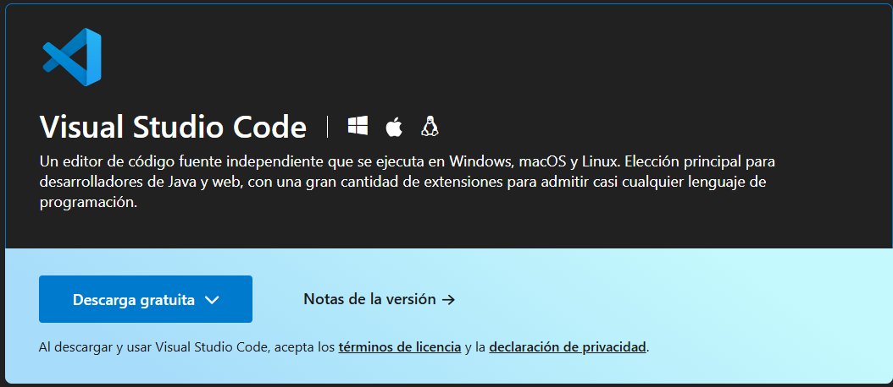
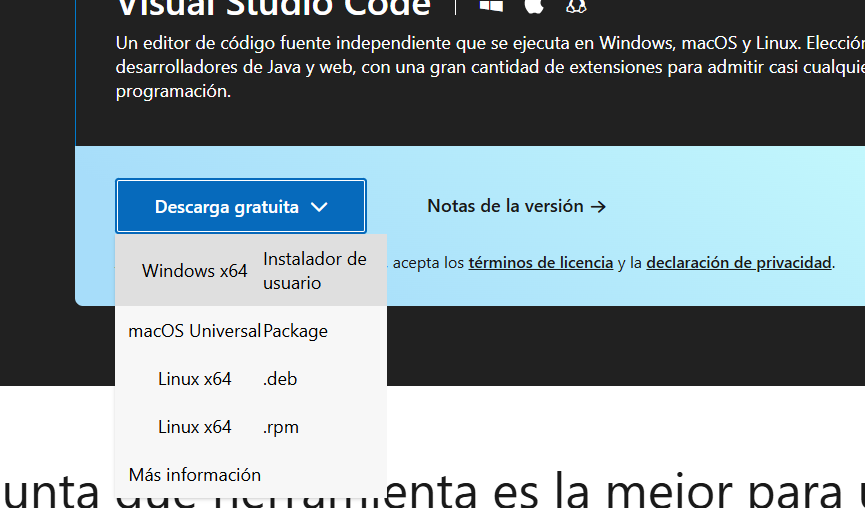
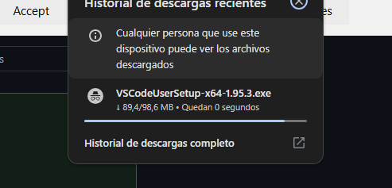
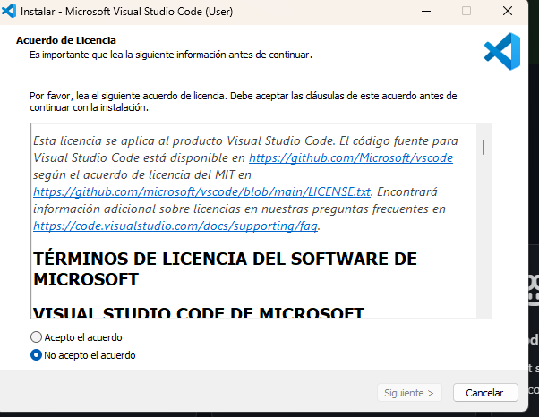
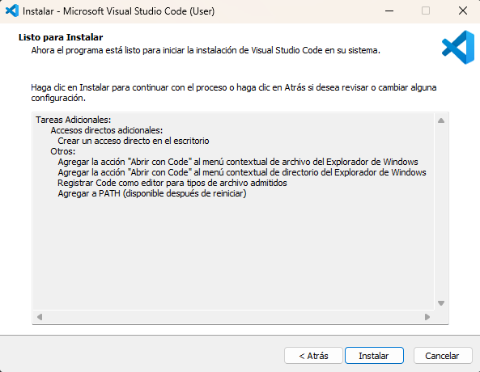
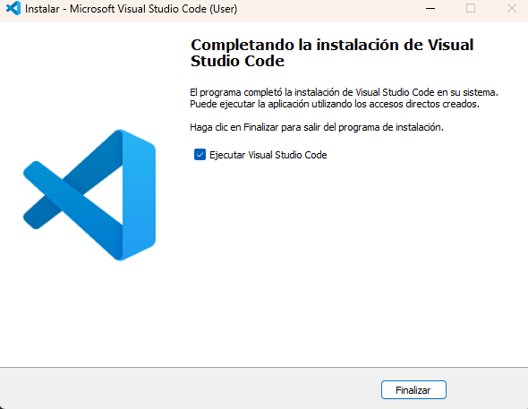

Instalación de Visual Studio Code
- En primer lugar vamos al sitio oficial de Visual Studio Code :

- Presionamos en "Descarga gratuita" .
- Pulsamos en "Descarga gratuita" y elegimos una de las opciones de abajo (depende de tu dispositivo y tus necesidades) :


- Cuando haya terminado, deberá completar la configuración del programa :
- Leer y aceptar el acuerdo :

- Haga clic en instalar:

